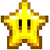
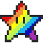
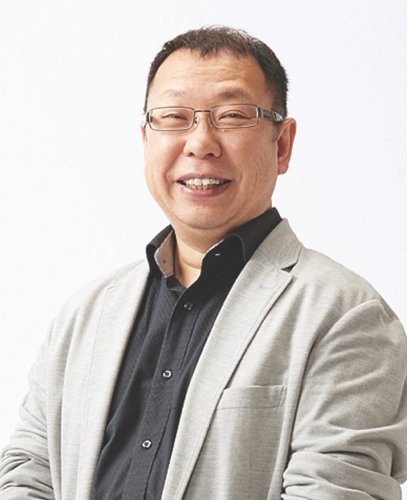

Shigeru Miyamoto (nacido el 16 de noviembre de 1952) es un diseñador y productor de videojuegos japonés. Él
es conocido por ser el creador de algunas de las sagas de videojuegos más vendidas, más aclamadas, más
duraderas y más influyentes de la historia.
Miyamoto se unió a Nintendo en 1977, cuando la compañía empezó su incursión a los videojuegos y empezó a
abandonar el negocio de las cartas de mesa por el que empezó en 1889. Sus videojuegos han aparecido en cada
consola de Nintendo, siendo su primer trabajo en máquinas arcade. Las franquicias que Miyamoto han creado
son:
Con el éxito de Donkey Kong y la serie que comenzó, Miyamoto recibió su propio equipo: el Departamento
Creativo, más tarde conocido como Nintendo EAD. Si bien Miyamoto ha mencionado que le resulta difícil decir
quién es su personaje favorito de Nintendo, afirma que algunos de sus favoritos más queridos incluyen Mario,
Princesa Peach, Luigi, Bowser, Princesa Zelda, Toad, Link y Donkey Kong. Sus juegos favoritos para la NES
son Baseball, Golf y Mario Bros. El juego favorito de Miyamoto que no es Nintendo es Angry Birds.
Miyamoto tiene una esposa, Yasuko, y dos hijos. Su hijo tenía 25 años en 2010 y trabajaba en una agencia de
publicidad. Su hija tenía 23 años en 2010 y estaba estudiando zoología en ese momento. Sus hijos jugaban
videojuegos en su juventud, pero él también los hizo salir. Aunque sabe algo de inglés, no habla con fluidez
y prefiere hablar en japonés para las entrevistas.
Miyamoto generalmente no firma autógrafos, por temor a ser inundado. Tampoco aparece en la televisión
japonesa, para permanecer en el anonimato. Se le acercan más turistas extranjeros que japoneses.
Miyamoto pasa poco tiempo jugando videojuegos en su tiempo personal, prefiriendo tocar la guitarra, la
mandolina o el banjo. Le encanta la música bluegrass. Él tiene un perro pastor de Shetland llamado Pikku que
sirvió de inspiración para Nintendogs. También es un criador de perros semi-profesional. Ha sido citado
diciendo: "¿Los videojuegos son malos para ti? Eso es lo que dijeron sobre el rock and roll".
Sus obras mas destacadas son:

Donkey Kong Jr. 1982 Arcade
Super Mario Bros 1983 Arcade

Donkey Kong 1981 Arcade
Devil World 1984 Arcade
Super Mario Bros. 1985 Famicom/NES
The Legend of Zelda 1986/1987 Famicom/NES
Earthbound Zero 1989 Famicom/NES
Super Mario Bros.: The Lost Levels 1988 Famicom/NES
Super Mario Bros. 3 1988/1990 Famicom/NES Si
F-Zero 1990/1991 Super Famicom/Super NES
Super Mario World 1990/1991 Super Famicom/Super NES
Super Mario Kart 1992 Super Famicom/Super NES
The Legend of Zelda: Link's Awakening 1993 Game Boy
Super Mario RPG 1996/1997 Super Famicom/Super NES
Super Mario 64 1996/1997 Nintendo 64
The Legend of Zelda: Breath of the Wild 2017 Wii
U/Nintendo Switch
Super Mario Odyssey 2017 Nintendo Switch
Takashi Tetzuka

Takashi Tezuka es un diseñador, productor y director de videojuegos que trabaja para Nintendo. Nació en la
ciudad de Osaka, Japón, el 17 de noviembre de 1960.
Sus trabajos comienzan en 1984, cuando fue el diseñador de Devil World; posteriormente fue parte del equipo de
desarrollo de Super Mario Bros. Su primer trabajo para la saga Zelda fue como director, diseñador y escritor del
primer juego de la saga en 1986. Finalmente, estaría involucrado en el desarrollo de 25 proyectos en total,
participando en varios roles como productor, supervisor, director y diseñador.
Takashi Tezuka es considerado el co-creador de la saga de Super Mario, habiendo trabajado codo con codo junto a
Shigeru Miyamoto desde el revolucionario Super Mario Bros. (1985) como asistente de dirección. Su impacto en la
franquicia es masivo: dirigió obras maestras que definieron la industria como Super Mario Bros. 3 y Super Mario
World (donde diseñó personalmente a Yoshi), y con los años evolucionó hacia el rol de productor general,
supervisando éxitos modernos que van desde la serie New Super Mario Bros. y la libertad creativa de Super Mario
Maker hasta el reciente y aclamado Super Mario Bros. Wonder.
Sus obras mas destacadas son:
1984 - Devil World (Director)
1985 - Super Mario Bros. (Asistente de dirección y
diseñador gráfico)
1986 - The Legend of Zelda (Codirector y diseñador
gráfico)
1990 - Super Mario World (Director)
1993 - The Legend of Zelda: Link's Awakening
(Director)
1995 - Tetris Attack (Supervisor)
1996 - Super Mario 64 (Asistente de dirección)
1997 - Star Fox 64 (Supervisor)
1998 - The Legend of Zelda: Ocarina of Time
(Supervisor)
2000 - The Legend of Zelda: Majora's Mask (Supervisor)